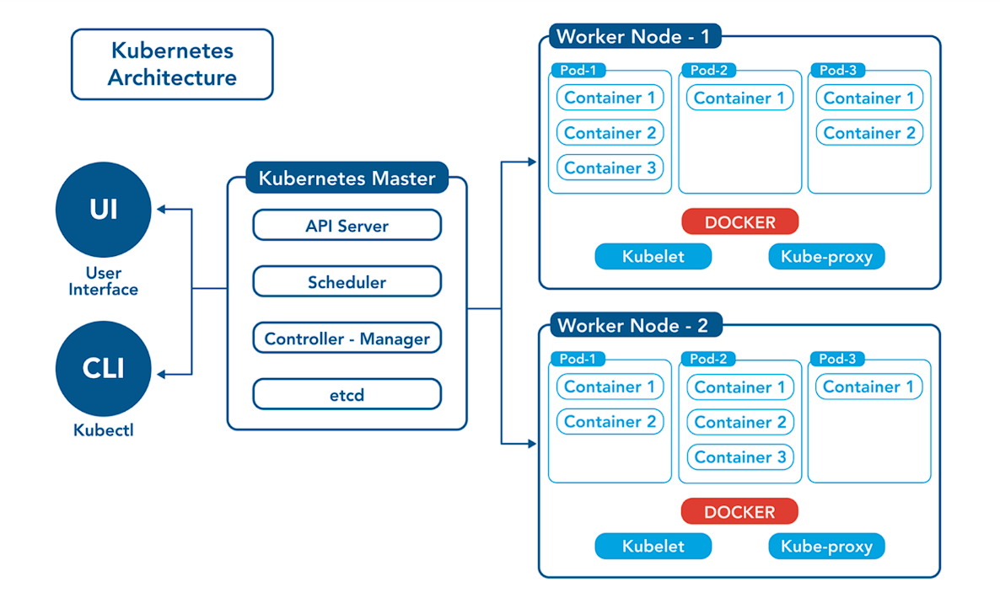

What is Kubernetes
Kubernetes is an open-source container management tool that automates container deployment, scaling & load balancing.
It schedules, runs, and manages isolated containers that are running on virtual/physical/cloud machines.
it also known as is K8s.
Benefit
- Container Orchestration
- Scalability
- Load Balancing
- High Availability
- Rollouts & Rollback
Architecture of Kubernetes
Kubernetes architecture is based on a cluster model that consists of a
control plane (master node) and one or more worker nodes.

1. Master Node (Control Plane)
Manages the overall cluster and makes global decisions:
- API Server: Entry point for all administrative operations.
- Scheduler: Assigns Pods to available nodes based on resources.
- Controller Manager: Maintains cluster state and handles replication.
- etcd: A distributed key-value store used for cluster configuration and state.
2. Worker Nodes
Responsible for running the actual containerized applications:
- kubelet: Ensures containers are running properly.
- kube-proxy: Handles networking for Pods.
- Container Runtime (e.g., Docker, containerd): Runs containers inside Pods.
These components work together to provide container orchestration, scalability,
high availability, and smooth application deployment in Kubernetes.
What is a Pod in Kubernetes?
The smallest deployable unit that can contain one or more containers sharing the same network and storage.
What is a ReplicaSet?
Ensures a specified number of pod replicas are running at any time.
What is a Pod Security Policy (PSP)?
PSPs help secure your Kubernetes cluster by ensuring pods only run with the necessary permissions and configurations, reducing security risks.
For example, a PSP can ensure that:
- Pods cannot run as root.
- Only specific volumes like
emptyDir or configMap are used.
- Privileged containers are restricted unless explicitly allowed.
What is a Namespace?
In Kubernetes, a namespace is a way to logically divide a cluster into separate virtual environments. It helps organize and manage resources (like pods, services, deployments, etc.), especially in environments with multiple teams or applications.
How to create a namespace:
kubectl create namespace my-namespace
How does Kubernetes handle application scaling?
- Horizontal Pod Autoscaler (HPA): Scales Pods based on CPU/memory utilization or custom metrics.
- Vertical Pod Autoscaler (VPA): Adjusts resource requests (CPU & Memory) of individual Pods.
How do you troubleshoot a failing Pod?
- Check Pod status:
kubectl get pods
- Describe the Pod:
kubectl describe pod <pod-name>
- Check logs:
kubectl logs <pod-name>
What is the difference between ConfigMap and Secret?
- ConfigMap: Stores non-confidential configuration data.
- Secret: Stores sensitive data, such as passwords and API tokens.
1. Deployment YAML File
The deployment.yml file is used to manage the deployment of application containers.
It defines how many replicas should run, the container image, and other configurations related
to the application lifecycle.
apiVersion: apps/v1
kind: Deployment
metadata:
name: nginx-deployment
labels:
app: nginx
spec:
replicas: 3
selector:
matchLabels:
app: nginx
template:
metadata:
labels:
app: nginx
spec:
containers:
- name: nginx
image: nginx:1.14.2
ports:
- containerPort: 80
Cmd to run Deployment.yml kubectl apply -f deployment.yaml
Key Sections:
- apiVersion: Defines the API version (e.g.,
apps/v1).
- kind: Specifies the resource type (
Deployment).
- metadata: Contains name and labels for the deployment.
- spec:
- replicas: Number of desired application instances.
- selector: Matches labels for the pods managed by this deployment.
- template:
- metadata: Labels applied to the pods.
- spec: Defines container details like image, ports, and resources.
2. Service YAML File
The service.yml file is used to expose your application to other applications or
external traffic. It defines how the pods are accessed within the cluster or externally.
apiVersion: v1
kind: Service
metadata:
name: my-app-service
labels:
app: my-app
spec:
selector:
app: my-app
ports:
- protocol: TCP
port: 80
targetPort: 80
type: LoadBalancer
Cmd to run service.yml kubectl apply -f service.yaml
Key Sections:
- apiVersion: Defines the API version (
v1 for services).
- kind: Specifies the resource type (
Service).
- metadata: Contains name and labels for the service.
- spec:
- selector: Matches labels of the pods to route traffic.
- ports:
- protocol: Network protocol (usually
TCP).
- port: Port exposed by the service.
- targetPort: Container port to forward traffic to.
- type:
ClusterIP (default): Internal-only access.NodePort: Exposes service on a static port on each node.LoadBalancer: Creates an external load balancer.
Ingress and Egress in Kubernetes
In Kubernetes, ingress and egress describe the flow of network traffic into and out of the cluster or its resources. They are essential concepts for controlling how applications communicate both inside the cluster and with external systems.
Ingress
Ingress refers to incoming network traffic into a Kubernetes cluster or specific pods. It exposes HTTP and HTTPS routes from outside the cluster to services running inside. Traffic routing is managed by rules defined on the Ingress resource.
apiVersion: networking.k8s.io/v1
kind: Ingress
metadata:
name: minimal-ingress
annotations:
nginx.ingress.kubernetes.io/rewrite-target: /
spec:
ingressClassName: nginx-example
rules:
- http:
paths:
- path: /testpath
pathType: Prefix
backend:
service:
name: test
port:
number: 80
Key Uses of Ingress:
- Expose services to external clients.
- Route traffic based on hostnames, URL paths, or protocols.
- TLS/SSL termination for secure HTTPS connections.
- Load balancing across multiple service instances.
- Virtual hosting for multiple domains/subdomains.
Egress
Egress refers to outgoing network traffic from the Kubernetes cluster or its pods to external destinations. It is used to control how cluster applications communicate with external systems.
apiVersion: networking.k8s.io/v1
kind: NetworkPolicy
metadata:
name: restrict-egress
spec:
podSelector:
matchLabels:
app: my-app
policyTypes:
- Egress
egress:
- to:
- ipBlock:
cidr: 192.168.1.0/24
ports:
- protocol: TCP
port: 443
Key Uses of Egress:
- Restrict outgoing traffic to specific external systems.
- Monitor and log outgoing traffic for security and debugging.
- Route traffic through proxies or gateways.
- Apply firewall rules using network policies.
Probes and Their Types in Kubernetes
In Kubernetes, probes are used by the kubelet to determine the health and readiness of a container. These checks help Kubernetes manage the lifecycle of pods more efficiently by restarting, stopping, or routing traffic to containers based on their health.
Types of Probes
Kubernetes provides three main types of probes:
- Liveness Probe: Checks if the container is still running. If it fails, the container is restarted.
- Readiness Probe: Determines if the container is ready to accept traffic. If it fails, the pod is removed from service endpoints.
- Startup Probe: Used to check if an application within a container has started. Useful for slow-starting apps, preventing premature restarts.
Example: Liveness Probe
livenessProbe:
httpGet:
path: /healthz
port: 8080
initialDelaySeconds: 3
periodSeconds: 10
Example: Readiness Probe
readinessProbe:
httpGet:
path: /ready
port: 8080
initialDelaySeconds: 5
periodSeconds: 10
Example: Startup Probe
startupProbe:
httpGet:
path: /startup
port: 8080
failureThreshold: 30
periodSeconds: 10
Key Configuration Fields:
- httpGet: Probe checks an HTTP endpoint.
- initialDelaySeconds: Wait time before the first probe.
- periodSeconds: Frequency of the probe execution.
- failureThreshold: Number of failures before action is taken.
- tcpSocket / exec: Alternative probe types using TCP connection or command execution.
What is Headless Service and StatefulSet in Kubernetes?
Kubernetes provides specialized ways to manage stateful applications and control how services discover pods. Headless Services and StatefulSets work together to manage stable network identities and persistent storage for stateful workloads.
Headless Service
A Headless Service is a service without a ClusterIP. Instead of load-balancing traffic, it allows clients to directly access individual pods using DNS records. This is essential for workloads that require stable network identities, like databases.
apiVersion: v1
kind: Service
metadata:
name: my-headless-service
spec:
clusterIP: None
selector:
app: my-app
ports:
- port: 80
Key Features of Headless Service:
- Set
clusterIP: None to disable load balancing.
- Provides DNS records for each pod (e.g.,
pod-0.my-headless-service.default.svc.cluster.local).
- Enables direct communication with individual pods.
- Works closely with StatefulSets for stable networking.
StatefulSet
A StatefulSet is a Kubernetes controller used to manage stateful applications. It ensures that pods are created in order, have persistent identities, and maintain stable storage.
apiVersion: apps/v1
kind: StatefulSet
metadata:
name: my-stateful-app
spec:
selector:
matchLabels:
app: my-app
serviceName: "my-headless-service"
replicas: 3
template:
metadata:
labels:
app: my-app
spec:
containers:
- name: app-container
image: my-app-image
volumeMounts:
- name: data
mountPath: /data
volumeClaimTemplates:
- metadata:
name: data
spec:
accessModes: [ "ReadWriteOnce" ]
resources:
requests:
storage: 1Gi
Key Features of StatefulSet:
- Stable network identity and DNS (e.g.,
pod-0, pod-1).
- Persistent storage using
volumeClaimTemplates.
- Ordered, graceful deployment and scaling.
- Useful for databases like MySQL, Cassandra, or Redis in master-slave setup.
Kubernetes kubectl Commands
1. What does kubectl get nodes do?
It lists all the nodes in the Kubernetes cluster with basic info like status and roles.
2. What is the purpose of kubectl get pods?
It displays all pods running in the default namespace.
3. How to get pods from a specific namespace?
Use kubectl get pods -n <namespace> to list pods in a chosen namespace.
4. How do you check available services?
Use kubectl get svc to list all services in the current namespace.
5. How to describe a specific pod?
Use kubectl describe pod <pod-name> to view its detailed information.
6. What does kubectl logs <pod-name> show?
It fetches logs from the default container of the specified pod.
7. How do you get logs of a specific container inside a pod?
Use kubectl logs <pod-name> -c <container> to get container-specific logs.
8. How to enter a running pod's shell?
Use kubectl exec -it <pod-name> -- /bin/bash for an interactive shell session.
9. How to apply a YAML file configuration?
Use kubectl apply -f <file.yaml> to apply configuration from a file.
10. How to delete a specific pod?
Run kubectl delete pod <pod-name> to remove a pod manually.
11. How do I delete resources using a YAML file?
Use kubectl delete -f <file.yaml> to remove resources defined in the YAML.
12. How to switch Kubernetes contexts?
Use kubectl config use-context <context> to change the working context.
13. How can I list all events in a cluster?
Use kubectl get events for viewing cluster-level events (useful for debugging).
14. What is kubectl rollout status used for?
It checks the rollout status of a deployment to see if it's successfully updated.
15. How to rollback a deployment?
Run kubectl rollout undo deployment <name> to revert to the previous version.
16. How do you expose a deployment using NodePort?
Use kubectl expose deployment <name> --type=NodePort --port=80 to create a service.
17. What does kubectl get all show?
It lists all running resources like pods, services, and deployments in the namespace.
18. How to check CPU/Memory usage of pods?
Run kubectl top pods to see current resource usage by each pod.
19. How to cordon a node?
Use kubectl cordon <node-name> to mark it unschedulable.
20. How to safely drain a node for maintenance?
Use kubectl drain <node-name> to evict all pods safely before maintenance.